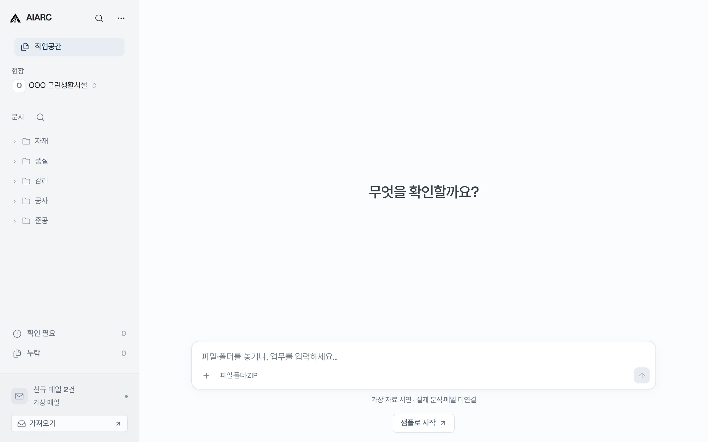
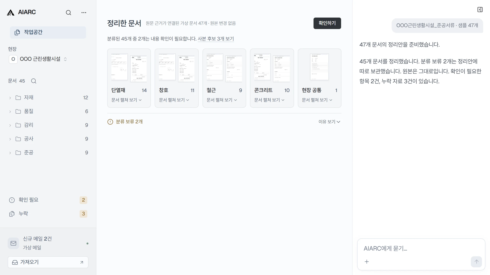
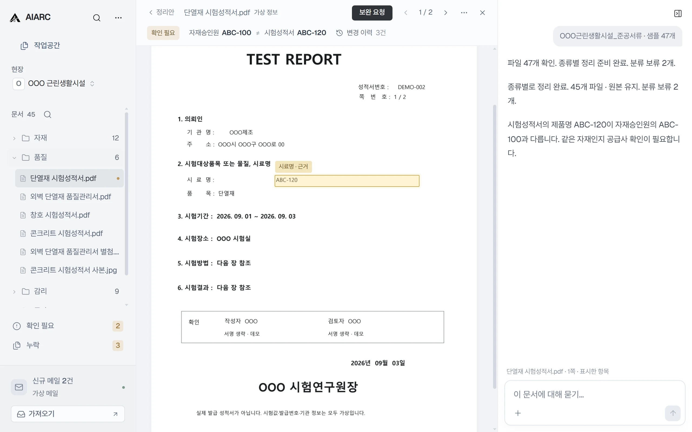
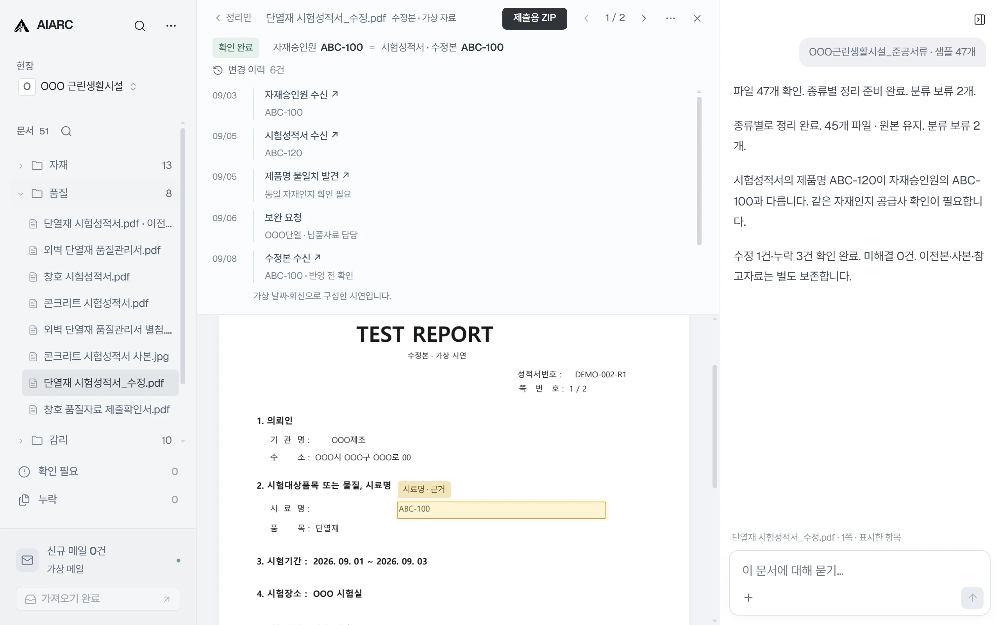

건축 프로젝트를 이해하는
AI 업무공간.
문서·도면·메일·사진과 변경기록을 연결해,
지금 무엇이 유효하고 왜 바뀌었는지 이해하는 업무공간을 만듭니다.

파일 이름과 형식 감지는 실제로 동작합니다. 분류·누락 분석은 샘플 결과를 사용합니다.
자료를 넣으면,
확인할 것만 남깁니다.
모든 파일을 다시 열어보는 대신, 정리된 결과와 확인할 항목부터 봅니다.

문제가 있으면,
원문에서 바로 확인합니다.
무엇이 다른지와 확인해야 할 근거를 같은 작업공간에서 보여줍니다.

수정본이 도착하면,
프로젝트 상태도 바뀝니다.
이전 원문과 변경 이력은 그대로 보존합니다.

프로젝트의 상태는
계속 변화합니다.
파일을 다시 찾는 대신, 현재 상태와 변화의 이유를 근거와 함께 확인합니다.
- 원도면 A
- 현장 변경지시
- 수정도면 B
- 회의록 · 메일
- 현장사진
- 현재 상태 · B
준공 자동화로 시작해 프로젝트를 이해하는 AI 업무공간을 만들고, 사람과 기업 사이의 건설 업무를 연결하는 AI 업무 인프라로 확장합니다.
- 준공 문서 자동화현재
- AI Project Workspace
- Project Intelligence
- Architecture / Construction Agent
- 한 사람
- 한 프로젝트
- 프로젝트 참여자
- 회사
- 회사와 회사 사이의 업무
- 건설 업무 네트워크
브라우저와 Windows에서
직접 체험하세요.
Windows 시연 앱 다운로드
Windows 10/11 · 64-bit · Portable · 설치 없이 실행
시연 범위
문서 데모는 실제 서식을 보존하거나 재현한 PDF 미리보기와 가상 내용을 사용합니다. 파일 감지와 화면 조작, 문서 열기와 근거 이동은 실제로 동작합니다. 분석·요청·회신·상태 변화는 준비된 데모 데이터이며 실제 AI 판단이나 메일 송수신이 아닙니다. 원본 문서를 변경하지 않으며, 전문적·법적 최종 판단은 사람이 합니다.